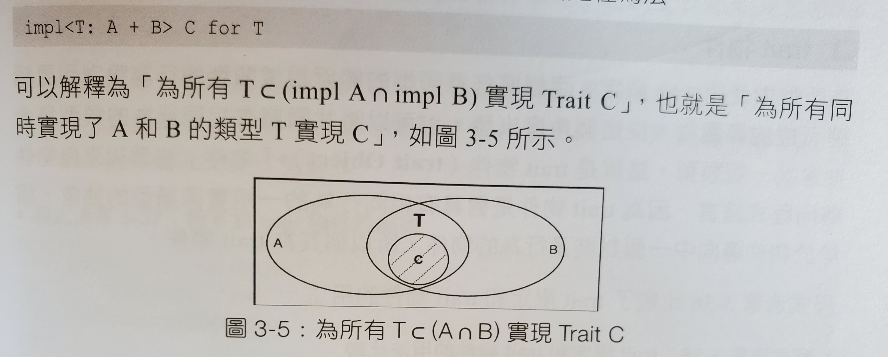

Rust 型別系統
- Rust 型別系統
- 類型轉換
- Deref
- as 運算符號
- Trait系統的不足
型別大小
- Sized Tyep
- 大部分的類型都是 Sized Type，就是可以在編譯時期就知道大小的
- 例如：u32, i64
- Dynamic Sized Type
- 無法在編譯時期知道大小的型別則叫作「DST (Dynamic Sized Type)」
- 例如：[T], Box

- Zero Sized Type
- 另外還有一種類型叫「ZST (Zero Sized Type)」，在執行時期，不佔用空間大小的型別
- 你可以用 ZST 來做一些反覆運算，Rust 編譯器有對 ZST 做最佳化
fn main() { let v: Vec<()> = vec![(); 10]; // 像是你可以這樣寫 for _i in v { println!("{:?}", 1); } // 雖然你有更簡單的寫法 for _i in 1..10 { println!("{:?}", 1); } }
- Bottom Type
- 只的是 never 類型
- 程式碼中用
!表示 - 特點
- 沒有值
- 是任意類型的子類型
- Bottom Type 的用處
- Diverging Function (發散函數)
- loop 迴圈
- 空列舉
enum Void{}
- ex:
fn print_meow_forever () -> ! { loop { println!("meow"); } } fn main () { let i = if false { print_meow_forever(); } else { 100 }; println!("{}", i); }
-
turbofish運算子
- 用來做顯示的型別宣告 ex:
fn main () { let x = "1"; println!("{}", x.parse::<i32>().unwrap()); }
泛型
- 用這樣的語法
<T>宣告泛型 ex:
#![allow(unused)] fn main() { struct Point<T> { x: T, y: T } }
trait 用法
宣告 interface
- interface 裡可以定義 function 或 type
- interface 裡不能實作另一個 interface，但 interface 之間可以繼承
- 使用
impl實作 interface - 使用
trait宣告 interface - 孤兒原則 (Orphan Rule)
- 要實現某個 trait，這個 trait 必須要在當前的 crate 中被定義
- 用來避免標準函式庫，或在其他地方被定義好的 trait 被修改到，而難以追查
實作自己的 Add:
trait Add<RHS, Output> { fn my_add (self, rhs: RHS) -> Output; } impl Add<i32, i32> for i32 { fn my_add (self, rhs: i32) -> i32 { self + rhs } } impl Add<u32, i32> for u32 { fn my_add (self, rhs: u32) -> i32 { (self + rhs) as i32 } } fn main () { let (a, b, c, d) = (1i32, 2i32, 3u32, 4u32); let x: i32 = a.my_add(b); let y: i32 = c.my_add(d); println!("{}", x); println!("{}", y); }
標準函式庫裡的 Add trait
#![allow(unused)] fn main() { pub trait Add<RHS = Self> { type Output; fn add (self, rhs: RHS) -> Self::Output; } }
標準函式庫 u32 的加法實作
#![allow(unused)] fn main() { impl Add for u32 { type Output = u32; fn add (self, rhs: u32) -> u32 { self + rhs } } }
標準函式庫 String 的加法實作
#![allow(unused)] fn main() { impl Add for String { type Output = String; fn add (mut self, rhs: &str) -> String { self.push_str(rhs); self } } }
trait 裡的 function 可以有一個 default 的實作
trait Top { fn wear_top (&mut self, _clothes: String) { println!("Default: coat"); } } trait Bottom { fn wear_bottom (&mut self, _clothes: String) { println!("Default: pants"); } } struct PersonLikeCoat { top: String, bottom: String, } impl Top for PersonLikeCoat {} impl Bottom for PersonLikeCoat { fn wear_bottom (&mut self, clothes: String) { self.bottom = clothes; println!("Changed: {}", self.bottom); } } fn main () { let mut ballfish = PersonLikeCoat { top: String::from("coat"), bottom: String::from("pants") }; ballfish.wear_top(String::from("sweater")); ballfish.wear_bottom(String::from("skirt")); }
trait 的繼承
trait Top { fn wear_top (&mut self, _clothes: String) { println!("Default: coat"); } } trait Bottom { fn wear_bottom (&mut self, _clothes: String) { println!("Default: pants"); } } struct Person { top: String, bottom: String, } impl Top for Person {} impl Bottom for Person { fn wear_bottom (&mut self, clothes: String) { self.bottom = clothes; println!("Changed: {}", self.bottom); } } trait WholeBody: Top + Bottom { fn wear_whole_body (&mut self, top: String, bottom: String) { self.wear_top(top); self.wear_bottom(bottom); } } impl WholeBody for Person {} fn main () { let mut ballfish = Person { top: String::from("coat"), bottom: String::from("pants") }; ballfish.wear_whole_body(String::from("sweater"), String::from("skirt")); }
用 trait 對泛型做限定 (trait Bound)
- 
語法 fn generic<T: FirstTrait + SecondTrait>(t: T) {}
或 fn generice<T> (t: T) where T: FirstTrait + SecondTrait {}
ex:
trait Top { fn wear_top (&mut self, _clothes: String) { println!("Default: coat"); } } trait Bottom { fn wear_bottom (&mut self, _clothes: String) { println!("Default: pants"); } } struct Person { top: String, bottom: String, } impl Top for Person {} impl Bottom for Person { fn wear_bottom (&mut self, clothes: String) { self.bottom = clothes; println!("Changed: {}", self.bottom); } } fn go_routin1<P: Top + Bottom> (p: &mut P) { p.wear_top(String::from("sweater")); p.wear_bottom(String::from("skirt")); } fn go_routin2<P> (p: &mut P) where P: Top + Bottom { p.wear_top(String::from("sweater")); p.wear_bottom(String::from("skirt")); } fn main () { let mut ballfish = Person { top: String::from("coat"), bottom: String::from("pants") }; go_routin1::<Person>(&mut ballfish); // ::<Person> 可省 go_routin2::<Person>(&mut ballfish); // ::<Person> 可省 }
宣告抽象型別 (Abstract Type)
- Abstract Type 是無法產生實體的型別
- rust 有兩種方式處理抽象型別：trait Object、impl Trait
- trait Object
- 將 trait 當作一種型別使用
- 與 trait bound 有點像，但 trait bound 是靜態分配，而 trait Object 是動態分配
- trait Object 在編譯時期無法知道其記憶體大小，所以他本身是一種指標
pub struct TraitObject {
pub data: *mut (),
pub vtable: *mut (),
}
-
上面的 struct 來自標準函式庫，但不是真的 trait 物件
-
data指標指向trait物件儲存的類型資料T
-
vtable指標指向包含為T實作的virtual table (虛表）
-
虛表本身是一種struct，包含解構函數、大小、方法等
-
編譯器只知道trait object的指標，但不知道要呼叫哪個方法
-
運行期， 會從虛表中查出正確的指標• 再進行動態呼叫
-
Trait物件的限制
- Trait的Self有一個隱式的trait bound
?Sized如<Self: ?Sized>，包含所有可確定大小的類型，也就是<T: Sized> - 但trait物件的Self不能被限定是Sized，因為trait物件一定是動態分配，所以不可能滿足Sized的條件
- 但Trait物件在運行期進行動態分發時必須確定大小，否則無法為其正確分配記憶體空間
- 因此trait中的方法必定是物件安全，物件安全即為必受到
Self: Sized的約束，且為沒有額外Self類型參數的非泛型方法
#![allow(unused)] fn main() { // 物件不安全的 trait trait Foo { fn bad<T> (&self, x: T); fn new() -> Self; } // 方法一：將不安全的部份拆出去 trait Bar { fn bad<T> (&self, x: T); } trait Foo: Bar { fn new() -> Self; } // 方法二：使用 where trait Foo { fn bad<T>(&self, x: T); fn new() -> Self where self: Sized; // 但這個 trait 作為物件時， new 會無法被呼叫 } } - Trait的Self有一個隱式的trait bound
動態分配與靜態分配的比較
trait Top { fn wear_top (&mut self, _clothes: String) { println!("Default: coat"); } } trait Bottom { fn wear_bottom (&mut self, _clothes: String) { println!("Default: pants"); } } struct Person { top: String, bottom: String, } impl Top for Person {} impl Bottom for Person { fn wear_bottom (&mut self, clothes: String) { self.bottom = clothes; println!("Changed: {}", self.bottom); } } trait WholeBody: Top + Bottom { fn wear_whole_body (&mut self, top: String, bottom: String) { self.wear_top(top); self.wear_bottom(bottom); } } impl WholeBody for Person {} fn static_dispatch<P: WholeBody> (p: &mut P) { p.wear_top(String::from("sweater")); p.wear_bottom(String::from("skirt")); } fn dynamic_dispatch (p: &mut WholeBody) { p.wear_top(String::from("sweater")); p.wear_bottom(String::from("skirt")); } fn main () { let mut ballfish = Person { top: String::from("coat"), bottom: String::from("pants") }; static_dispatch::<Person>(&mut ballfish); // ::<Person> 可省 dynamic_dispatch(&mut ballfish); }
impl Trait
- 是靜態分配的抽象類型
trait Fly { fn fly(&self) -> bool; } struct Duck; impl Fly for Duck { fn fly(&self) -> bool { return true; } } fn fly_static (s: impl Fly) -> bool { s.fly() } fn can_fly (s: impl Fly) -> impl Fly { if s.fly() { println!("fly!"); } else { println!("fell!") } s // return s } fn main () { let duck = can_fly(Duck); }
- 雖然這個語法很有趣，但有些情況編譯器會誤判，例如下面的例子，
a跟b，被編譯器認定為不同的 type，所以sum會報錯
#![allow(unused)] fn main() { use std::ops::Add; fn sum<T>(a: impl Add<Output=T>, b: impl Add<Output=T>) -> T { a + b } }
- 與靜態分配型態相對的是
dyn Trait動態分配的型態
#![allow(unused)] fn main() { fn dyn_can_fly (s: impl Fly+'static) -> Box<dyn Fly> { if s.fly() { println!("fly!"); } else { println!("fell!"); } Box::new(s) } }
標籖
-
Rust一共提供5個常用的標籖• 被定義在
#![allow(unused)] fn main() { std::marker }裡e
Sized用來標識編譯期可確定大小的類型，大部份類型都預設定義實作 SizedUnsize用來標識動態大小類型Copy用來標識可安全按位複製類型Send用來標識可跨執行緒安全傳遞值的類型，也就是可以跨執行緒傳遞所有權Sync用來標識可在執行緒間安全共用參考的類型
-
標籤類 trait，都是用下面這種寫法標示他的標籤性質
#![allow(unused)] fn main() { #[lang = "sized"] // lang 表示 Sized trait 供 Rust 語言本身使用 pub trait Sized {} // 此程式為空，無實作方法 }
類型轉換
Deref
- 參考使用
& - 設定值使用
* - 可以實作Deref的trait來自訂設定值的操作
- Deref是強制轉型的，如果某個類型
T實作Deref<Target=U>，則使用T的參考時，參考會被轉型成U
fn foo (s: &[i32]) { println!("{:?}", s[0]); } fn main () { let a = "hello".to_string(); let b = " world".to_string(); // b 被自動 deref let c = a + &b; println!("{:?}", c); /// &Vec<T> -> &[T] let v = vec![1, 2, 3]; foo(&v); let x = Rc::new("hello"); let y = x.clone(); // Rc<&str> // 如果想要呼叫 &str 的 clone，必須要自己 deref let z = (*x).clone(); // &str }
as 運算符號
類型轉換（含生命週期）
fn main () { let a = 1u32; let b = a as u64; println!("{:?}", a); println!("{:?}", b); let c = std::u32::MAX; let d = c as u16; println!("{:?}", c); println!("{:?}", d); let e = -1i32; let f = e as u32; println!("{:?}", e); println!("{:?}", f); let a: &'static str = "hello"; // &'static str let b: &str = a as &str; let c: &'static str = b as &'static str; }
限定用法
struct S(i32); trait A { fn test(&self, i: i32); } trait B { fn test(&self, i: i32); } impl A for S { fn test(&self, i: i32) { println!("From A: {:?}", i); } } impl B for S { fn test(&self, i: i32) { println!("From B: {:?}", i) } } fn main () { let s = S(1); A::test(&s, 2); B::test(&s, 3); <S as A>::test(&s, 4); <S as B>::test(&s, 5); }
From與Into
- 定義於
std::convert - 互為反向操作
#[derive(Debug)] struct Person { name: String } impl Person { fn new<T: Into<String>>(name: T) -> Person { Person { name: name.into() } } } fn main () { let person = Person::new("Alex"); let person = Person::new("Alex".to_string()); println!("{:?}", person); // String from 的方法 let to_string = "hello".to_string(); let from_string = String::from("hello"); assert_eq!(to_string, from_string); // 如果 U 實現了 From<T>，則 T 類型的實例，都可以呼叫 into 方法轉換為 U let a = "hello"; let b: String = a.into(); // 所以一般情況只要實作 From 即可，除非 From 很難實作，才需要實作 Into }
Trait系統的不足
孤兒原則
- 孤兒原則解說
- 若下游程式想要使用擴充某些 crate，就必須包裝成新的 type，以迴避孤兒原則
- 而對一些本地端的類型，在被 Option，或是 Rc 等 interface 包裝後，就會被認定為非本地端類型，擴充時就會發生問題
use std::ops::Add; #[derive(PartialEq)] struct Int(i32); impl Add<i32> for Int { type Output = i32; fn add (self, other: i32) -> Self::Output { (self.0) + other } } impl Add<i32> for Option<Int> {} // (X) // 因為 Rust 裡 Box 有 #[fundamental] 標籤 impl Add<i32> for Box<Int> { type Output = i32; fn add (self, other: i32) -> Self::Output { (self.0) + other } } fn main () { assert_eq!(Int(3) + 3, 6); assert_eq!(Box::new(Int(3)) + 3, 6); }
程式複用率不高
-
重複原則
- 規定不可以為重疊的類型實作同一個 trait
#![allow(unused)] fn main() { impl<T> AnyTrait for T {} impl<T> AnyTrait for T where T: Copy {} impl<T> AnyTrait for i32 {} }
#![allow(unused)] fn main() { // 效能問題 // 這裡實作了 += 的對應方法 impl<R, T: Add<R> + Clone> AddAssign<R> for T { fn add_assign(&mut self, rhs: R) { // clone 會造成效能的負擔，有些類型不需要用 clone 這個方法 // 但因為重複原則，無法限縮實作對象，所以為了效能，很多作法是位每個類型實作 trait // 造成程式複用度不高 let tmp = self.clone() + rhs; *self = tmp; } } }